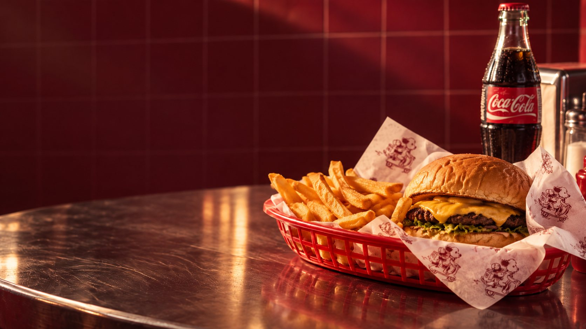
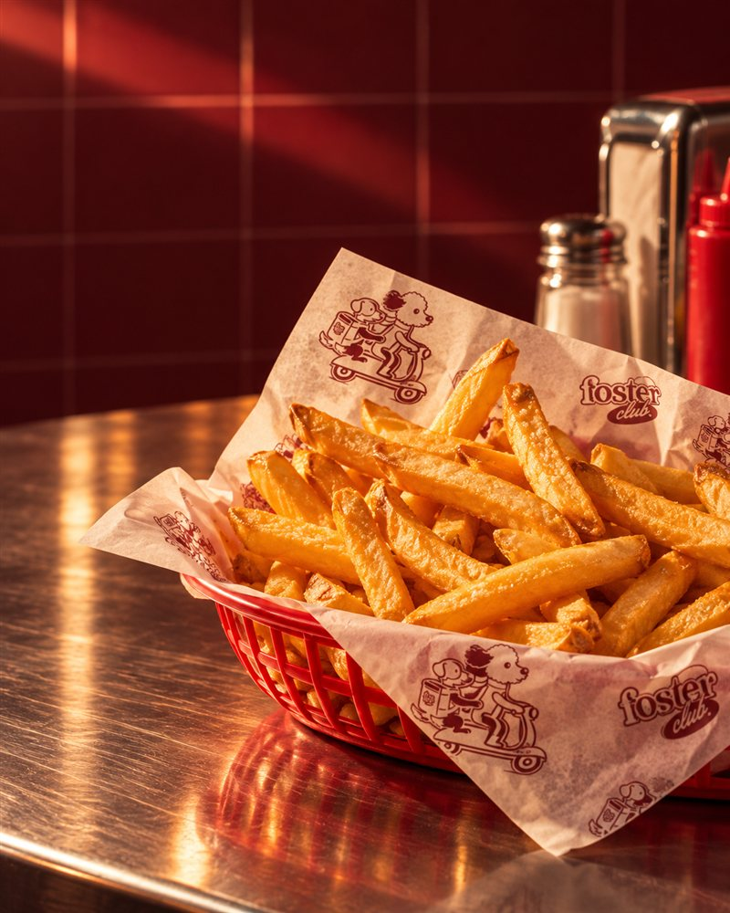
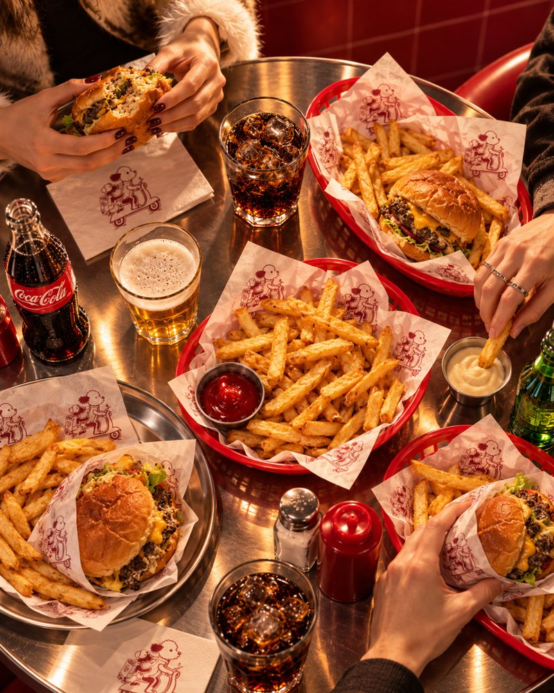
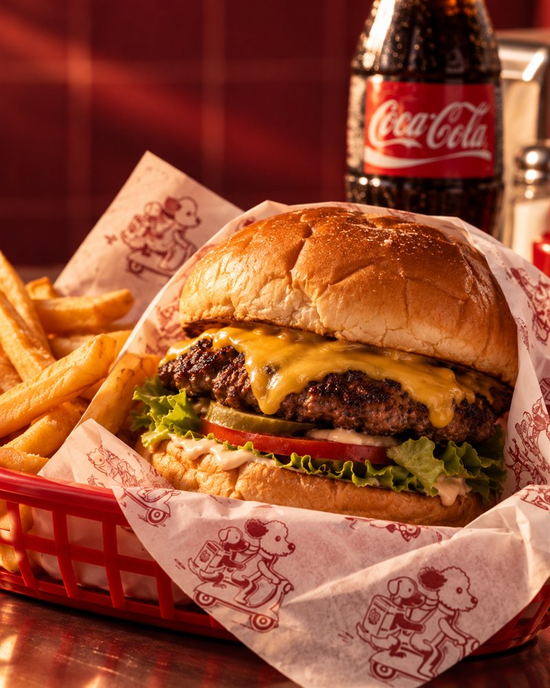
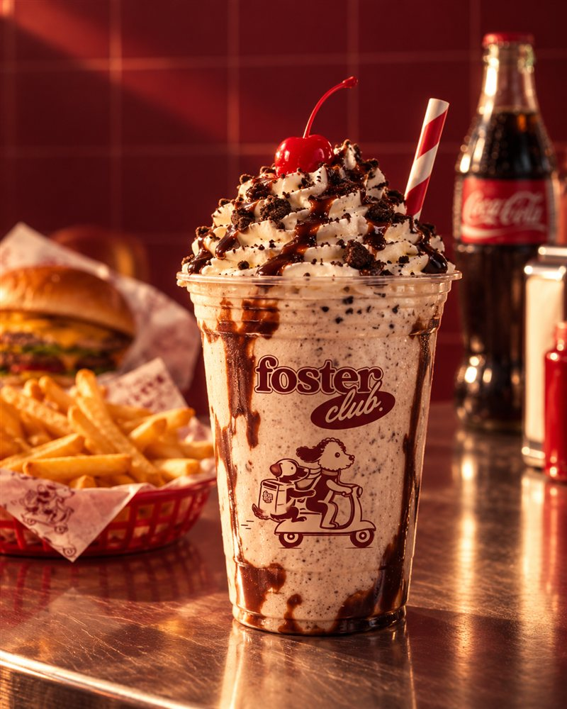

NOT JUST
BURGERS.
IT’S A CLUB.
Burgers, amigos y buenas historias.
Un club para los que disfrutan las cosas simples y bien hechas.
GOOD
BURGERS.
HAPPIER
PEOPLE.
CARTA DESTACADA
NUESTRAS
BURGERS
Ingredientes simples, combinaciones que funcionan y mucho sabor.
Ver carta completa Productos y precios por confirmar.EL CLUB
MÁS QUE
BURGERS
Foster Club es un punto de encuentro. Buena comida, música, amigos y una actitud simple: disfrutar.
Conocé nuestra historia SAME
SAMEBURGERS
DIFFERENT
STORIES.
Momentos del Club

FOOD
BETTER
COMPANY.



DESLIZÁ PARA VER MÁS →
VISITANOS
TE
ESPERAMOS
en Tandil.
TANDIL, BUENOS AIRESVER EN MAPS →
DIRECCIÓNTandil, Buenos AiresDirección exacta por confirmar
HORARIOPor confirmar
CONTACTOWhatsApp por confirmar
SEGUINOS@fosterclubb ↗